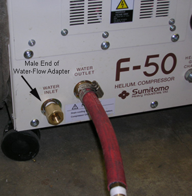
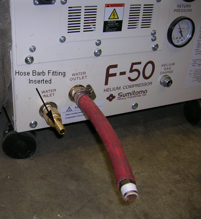
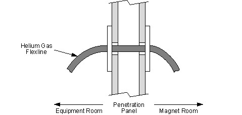
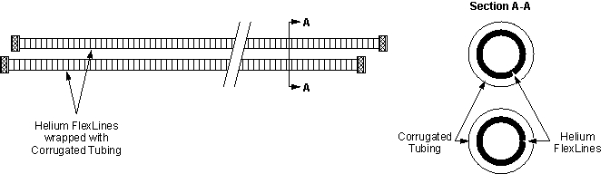
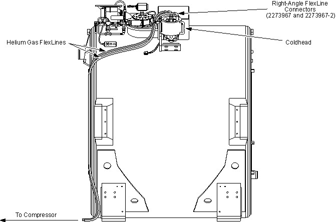
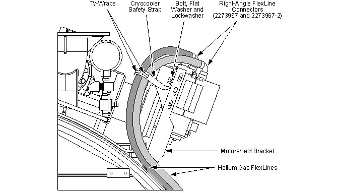
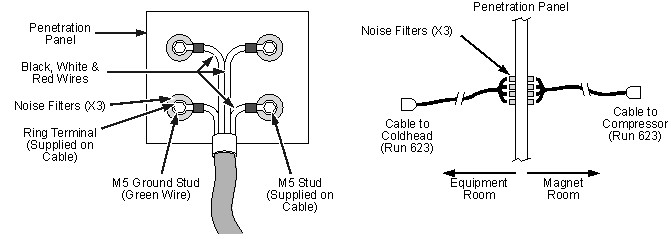
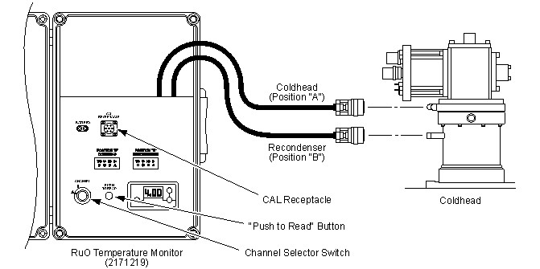
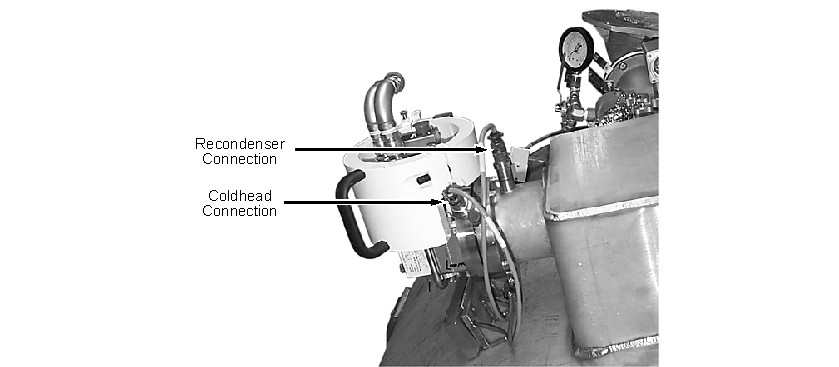
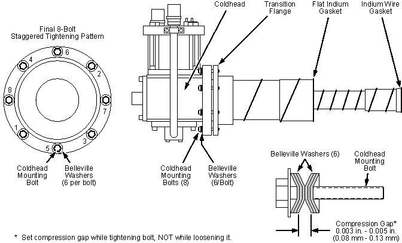

Operating Documentation
Direction 5440001-3, Rev# 6
Signa HDxt Service Methods
Module Version 3.0, Version Date 2/8/10
Operating Documentation |
| Required Persons | Preliminary Reqs | Procedure | Finalization |
|---|---|---|---|
| 1 | Included in Procedure | 1.5 hours | Included in Procedure |
The Cryocooler comes with a Coldhead already installed on the magnet and a separate Compressor unit that will be located in the Equipment Room. A power cable and gas supply and return lines connect the two units. Installation/checkout of these components are performed in this Cryocooler Installation and Checkout procedure.
Prior to installation, locate and read the vendor manual(s) supplied with the system. Become thoroughly familiar with the configuration and procedures of the system. Compressor installation instructions are covered in the Compressor vendor's manual. The Cryocooler interconnect diagram is shown in Cryocooler System Interconnects.
| Item | Qty | Effectivity | Part# | Manufacturer | |
|---|---|---|---|---|---|
| Leather Gloves | 1 pr./person | - | - | - | |
| Brass Master Padlock with Brass Shackle | 1 | - | 46-194427P320 | - | |
| Brass Master Transition Padlock | 1 | - | 2387081 | - | |
| Black & White on Red Lockout Tag | 1 pkg. of 25 | - | 46-194427P322 | - | |
| Transition LOTO Tag | 1 | - | 46-194427P313 | - | |
| Line Cord Plug Cover, Plugs ≤3 in. (76 mm) wide x ≤5.875 in. (149 mm) long, Cords ≤1.25 in. (31 mm) diameter | 1 | - | 46-194427P321 | - | |
| Coldhead/Compressor Service Kit | 1 | - | 46-281088G3 | - | |
| RuO Temperature Monitor (included in RuO Temperature Monitor Kit 2183710) | 1 | - | 2171219 | - | |
| Digital Voltmeter (DVM), Volt-Ohm Meter (VOM) or noncontact voltage tester | 1 | - | - | - | |
| High Pressure Helium Regulator (included in Coldhead/Compressor Service Kit 46-281088G3) | 1 | - | 46-2940009P1 | - | |
| Helium Line Adapter Hose (included in Coldhead/Compressor Service Kit 46-281088G3) | 1 | - | 46-294002P1 | - | |
| Gas Charging Tool | 1 | - | 5102120 | - | |
| Portable Leak Detector (optional) | 1 | - | 2270571 | - | |
| Titanium Tool Kit: Basic Set 5113258 or Installation Set 5112581 or other nonferromagnetic tools (magnets with magnetic fields >1.5T) | 1 kit | - | 5113258 or 5112581 | - | |
| HDx Service Platform - Can use Universal Service Ladder/Platform 2319156 if service space ≥30 in. (762 mm) | 1 | - | 5155291 (or 2319156) | - | |
| Service Methods documentation for the magnet/enclosures (available through the Common Documentation Library at gehealthcare.com or your local GE Healthcare Service Representative) | 1 | - | - | - | |
| Item | Qty | Effectivity | Part# | Manufacturer |
|---|---|---|---|---|
| Leak detection fluid (Snoop, Bird Dog Quart Spray P/N DOG-1Q, Big Blue P/N Rt100S or Rt100G, or Leak-Tec) | 1 | - | - | - |
| Bronze Wool | 1 pkg. | - | 46-318068P1 | - |
| 99.999% (five nines) Helium Gas, 235 SCF Nonmagnetic Cylinder | 1 | - | - | - |
| Item | Qty | Effectivity | Part# | Manufacturer | |
|---|---|---|---|---|---|
| Sumitomo CSW-71D Shield Cooler Compressor 2188440-2 | 1 | - | 2188440-2 | - | |
| SHI Water-Cooled, High-Voltage Compressor Cable Kit 2211446 | 1 | - | 2211446 | - | |
| Corrugated Plastic Gas Line Raceway Tubing, 50 ft. (15.24 m) | 2 | - | 2251611 | - | |
| ||||
| Electrical Shock Hazard | ||||
| Contact with connectors leading to an energized Compressor can cause electrical shock. | ||||
| Whenever the input power to the Compressor is disconnected, follow OSHA Lockout/Tagout (LOTO) procedures to make sure power is not supplied to the Compressor. |
| Condition | Reference | Effectivity |
|---|---|---|
Removal of some magnet enclosure components may be required to complete portions of the Cryocooler Installation and Checkout procedure. Refer to the appropriate document below and the appropriate Service Methods documentation (available through the Common Documentation Library at gehealthcare.com or your local GE Healthcare Service Representative) before continuing if cover removal is required. | - | |
or | - |
| ||||
| Electrical Shock Hazard! | ||||
| Contact with connectors leading to an energized Compressor can cause electrical shock. | ||||
| Whenever the input power to the Compressor is disconnected, follow loto procedures to make sure power is not supplied to the Compressor. |
Unpack and install the Compressor in conformance with the Compressor vendor's service manual.
Note any visible damage and notify the Shipper.
LOTO input power to the Compressor immediately after unpacking the Compressor.
Verify that no voltage is present by using a DVM or equivalent measuring device.
Position the Compressor in the Equipment Room as required in the site plan. Refer to the site planning manual.
| ||||
Observe the following:
| ||||
Remove LOTO, and connect the input power cable in conformance with the vendor manual and the local electrical code.
Check and adjust the Cryocooler system static gas pressure in conformance with Cryocooler System Gas Pressure Adjustments.
| ||||
| Poison Hazard! | ||||
| Antifreeze is poisonous to aquatic, animal and human life. Because of its sweetness, animals are drawn to it. Consequently, it is classified as hazardous both for shipment and as a waste and not shipped by untrained people. | ||||
| Cryocooler Compressors, which contain antifreeze, must be drained before being returned to the supplier. Make arrangements with the hospital maintenance department for disposal. |
Verify that the cooling water supply meets all requirements specified in the vendor's service manual.
Connect the water supply hose to the cooling water inlet connection, and secure with a worm-drive screw-type hose clamp or similarly secure connection.
Similarly connect and secure the water return hose to the cooling water outlet connection of the Compressor.
Turn on the cooling water supply, and allow air to purge from the system.
Check the system for water leaks.
The recently released F-50 compressors allow greater water flow than the CSW-71D. This may sometimes trigger a high water-flow alarm. The water chillers that are hooked up to cool F-50 compressors often cannot be adjusted to compensate. A water-flow adapter (GE P/N 5335002) addresses the issue. The adapter will need to be installed only on the inlet coolant port of the F-50 compressor as described below.
The water-flow adapter has a Japanese standard male PT connection on one end that comes pre-wrapped with Teflon® tape, which is threaded into the compressor.
| NOTE: | Although similar, PT thread is not the same as NPT thread. Be sure to use only Sumitomo-supplied parts and fittings. |
The other end of the water-flow adapter has a Japanese standard female PT connection thread that will attach directly to the hose barb fitting supplied by Sumitomo.
Locate the coolant (Water Inlet) port on the front face of the compressor.
Insert the water-flow adapter, thread the male end into the coolant inlet port of the compressor, and tighten as appropriate to prevent leaks.
Illustration 1: Male End of Water-Flow Adapter in Water Inlet Port

Thread the hose barb fitting (shown below) into the water-flow adapter, and tighten appropriately to prevent leaks.
Illustration 2: Hose Barb Fitting Threaded into Water-Flow Adapter

Once the water-flow adapter installation is completed, all coolant hoses must be connected appropriately and checked for leaks.
| ||||
| Helium gas lines and Coldhead power cables are marked with two run numbers: one for Cryocooler applications and the other for Shield Cooler applications. Before installing Coldhead gas lines and power cables, mark out the run number on the label at each end of the line/cable that does NOT apply with a black pen. Refer to the table below. | ||||
Mark out the Shield Cooler run numbers on all gas lines, keeping visible those numbers listed below.
Table 1: Coldhead/Compressor Gas Line and Power Cable Run Numbers
| Gas Lines | Power Cables | |||
| Supply Line | Return Line | Coldhead to Penetration Panel | Compressor to Penetration Panel | |
| Run Number | 621 | 622 | 624 | 623 |
| ||||
| When routing gas lines, make sure there's sufficient slack at both ends and that any excess length is not coiled to less than 12 in. (300 mm) radius to prevent bending force on Aeroquip fittings and strain that may cause chirping noise on the line. | ||||
Feed the gas supply line through the designated 55 mm (2.17 in.) port in the Penetration Panel. Position the line with one end at the Compressor and the other at the Coldhead on the magnet.
| NOTE: | See Helium Flexline Connections and Casing Replacement for proper connection of Aeroquip fittings. |
Feed the gas return line through the other port in the Penetration Panel, and route in parallel with the supply line.
Adjust the slack on the Helium supply and return flex lines for the most suitable length on both sides of the Penetration Panel. Loosely coil excess line length in the equipment room.
| NOTE: | RF shielding of flexlines, as they pass through the Penetration Panel, is performed from the Equipment Room side of the panel. Use the following procedure for both the Helium supply and return lines. |
Install RF shielding around each gas line as it passes through the Penetration Panel shown below.
Insert Bronze Wool (46-318068P1) around the Helium supply line (top and bottom) over the thickness of the Penetration Panel.
Insert Bronze Wool (46-318068P1) around the Helium return line (top and bottom) over the thickness of the Penetration Panel.
Illustration 3: Flexline at Penetration Panel

| ||||
| Corrugated plastic tubing is used to isolate helium gas lines from each other and from Ground to prevent RF broadband noise. If the supplied tubing does not fully cover the helium gas lines, order additional tubing to fully cover the lines. | ||||
If Corrugated Plastic Tubing (2251611) does not already cover the length of each flexline, cover both flexlines completely with Corrugated Plastic Tubing (2251611) from the Penetration Panel, where the lines exit the Magnet Room, to the helium line fittings at the Coldhead.)
Illustration 4: Helium Line Casing Insulation

| ||||
| Potential Hazard! | ||||
| Flexlines with Broken Aeroquip fittings may disconnect and move erratically. | ||||
| Do not put any bending force on Aeroquip fittings while connecting/disconnecting helium flexlines. A bending force can result in bending or breakage of the Aeroquip stems. |
| ||||
Do NOT put any bending force on Aeroquip fittings while connecting/disconnecting
helium flexlines. A bending force will create difficulty in the rapid
engagement/disengagement required to prevent helium loss and system
contamination.
| ||||
Connect both helium flexlines to the Compressor using appropriate Aeroquip connection wrenches. Always use two wrenches: one to hold fast and one to tighten. The hold fast wrench helps keep the back-side adapter connection undisturbed, thus making gas leaks in the system less likely. (See the illustration below and Helium Flexline Connections and Casing Replacement.
Illustration 5: Two-Wrench Connection Technique for Aeroquip Coupling
Observe the Compressor pressure gauge readings after connecting the gas lines. Readings should remain constant.
Lower pressure gauge readings indicate either the gas lines were not fully charged when received, or one line could be leaking.
If a leak is suspected, refer to System Leak Test.
| ||||
| When routing gas lines, make sure there is sufficient slack at both ends and any excess length is not coiled to less than a 12 in. (300 mm) radius to prevent bending force on Aeroquip fittings and strain that may cause chirping noise on the line. | ||||
Route the gas lines through the magnet's rear flange and in a wide arc to the vicinity of the Coldhead as shown below.
| NOTE: | Do not connect the gas lines to the Coldhead until the lines are secured to the Cryocooler Safety Strap. |
Illustration 6: Flexible Gas Line Routing at Magnet

Position the gas lines in a gentle curve toward the center of the magnet as shown above, and adjust line slack and angles to keep the lines from kinking and to minimize tension and noise (chirping).
Verify that the Cryocooler Safety Strap (2219776) is secured onto the Motor Shield Bracket by a 0.50-13 UNC x 1.25 in. Stainless Steel Bolt (46-260950P46), flat washer (46-252635P11) and lock washer (46-281162P13).
Using tie-wraps, secure the gas return line to the Cryocooler Safety Strap, then the gas supply line as shown.
Illustration 7: Cryocooler Safety Strap Connected to Motor Shield Bracket

| ||||
| Make sure the helium gas lines are connected to the Coldhead
in the sequence provided below. Gas back pressure may prevent the
Coldhead from starting if gas lines are connected in the reverse sequence. Order and technique are important when connecting helium flexlines/fittings to prevent inoperative Coldheads and system contamination. Read and follow Helium Flexline Connections and Casing Replacement when connecting or disconnecting Aeroquip fittings. | ||||
Connect right-angle flexline connectors (2273967 and 2273967-2) to the return and supply fittings on the Coldhead, if not already connected to the Coldhead. Make sure the connectors are oriented as shown in Illustration 6 and Illustration 7.
| NOTE: | Magnets ship from the factory with right-angle flexline connectors (2273967 and 2273967-2) already installed on the Coldhead. |
Connect the gas return line (green mark) to the Coldhead first, then the gas supply line (yellow mark) to the Coldhead. (See Illustration 7.)
Make sure the flexible gas lines are still routed across the magnet approximately as shown in Illustration 6.
Observe the readings of the Compressor pressure gauges:
Constant pressure readings at the Two-Stage Coldhead specification: No leakage is suspected.
Readings above the Two-Stage Coldhead specification provided in the table below: Vent the pressure down in conformance with Cryocooler System Gas Pressure Adjustments.
Readings below the Two-Stage Coldhead specification provided in the table below: Increase the helium gas charge in the complete system by supplying helium gas through the Compressor supply fitting in conformance with Cryocooler System Gas Pressure Adjustments. If a leak is suspected, proceed to the next section, Cryocooler Leak Test.
Table 2: Compressor Static Pressures
| Equipment | Static Gas Pressure at 20°C (68°F) | ||
|---|---|---|---|
| MPa | kgf / cm2G | psig | |
| RDK-408 4K Two-Stage Coldhead | 1.60 to 1.65 | 16.3 to 16.8 | 232 to 239 |
If helium pressure continues to drop after increasing the helium charge, remove the flexlines from the Compressor using the two-wrench technique shown in Illustration 5.
| NOTE: | Lines suspected of leaking may be tested using a regulator, charging line and manifold. |
Connect a regulator, charging line and manifold, and purge in conformance with Cryocooler System Gas Pressure Adjustments.
Connect one of the flexlines to the appropriate fitting on the manifold, and pressurize to approximately 100 psig.
Reduce the supply pressure using the regulator control, and observe whether the reduced pressure is maintained on the manifold pressure gauge.
If the pressure continues to drop, that line may have a gas leak.
If the Compressor pressure gauge readings drop and stay constant, the charge could be low. Recharge the system.
Maintain 100 psig with the regulator, and check the line with a liquid soap solution or a commercial leak-testing solution, such as Leak-Tec.
If the line has a leak, notify Installed Base Support at 843-664-1715 to obtain a replacement. Leave a message if no one answers.
| ||||
| Helium gas lines and Coldhead power cables are marked with two
run numbers: one for Cryocooler applications and the other for Shield
Cooler applications. Before installing Coldhead gas lines and power
cables, mark out with a black pen the run number that does not apply
on the label at each end of the line/cable. See the table below. Do NOT cut through the power cable insulation when removing a nonapplicable run number label. | ||||
Mark out the Shield Cooler run numbers on all gas lines, keeping visible those numbers listed in the table below.
Table 3: Coldhead/Compressor Gas Line and Power Cable Run Numbers
| Run Number | Gas Lines | Power Cables | ||
| Supply Line | Return Line | Coldhead to Penetration Panel | Compressor to Penetration Panel | |
| 621 | 622 | 624 | 623 | |
| ||||
| Electrical Shock Hazard! | ||||
| Contact with connectors leading to an energized Compressor can cause electrical shock. | ||||
| Whenever the input power to the Compressor is disconnected, follow loto procedures to make sure power is not supplied to the Compressor. |
After the Penetration Panel is installed:
Disconnect and LOTO input power to the Compressor. Verify that no voltage is present by using a DVM or equivalent measuring device.
| ||||
| Make sure the wire code (color and number) is properly matched on the noise filter studs on both sides of the Penetration Panel to prevent improper operation/damage. | ||||
Connect the Coldhead Power Cables (Runs 623 and 624) as shown below when the Penetration Panel is installed.
The factory-supplied power cables may be connected to a terminal block to facilitate Cryocooler operation prior to Penetration Panel installation.
If the terminal block is not present, connect the ring terminals via screws or the terminal block of the same wire color to allow the Cryocooler to operate prior to Penetration Panel installation.
Illustration 8: Cryocooler Electrical Cable Connections at Penetration Panel

Connect the Run 623 Coldhead cable to the Compressor and the Run 624 cable to the Coldhead. Refer to Magnet Cryocooler Interconnects.
Remove LOTO and connect the Cryocooler Compressor input power cable.
Turn on the main power.
Turn the Compressor's power switch On. (The Coldhead motor should begin operating.)
Perform the Cryocooler System functional checks covered in the vendor's manual, Vendor Manual Matrix.
RuO Temperature Monitor 2171219 (included in RuO Temperature Monitor Kit 2183710) is used to monitor the second-stage RuO temperature and the mating Recondenser surface temperature on a Cryocooler Coldhead during installation and troubleshooting of the Coldhead. During operation, second-stage Coldhead temperature is monitored indirectly by monitoring the silicone diode temperature of the Recondenser at the System Monitor Cabinet. First-stage Coldhead temperature is monitored indirectly by monitoring the silicone diode Coldhead Sleeve temperature at the System Monitor Cabinet.
| NOTE: | Magnet Monitor (2209000) or Magnet Monitor 3 (2394952) can be used to monitor cool down and temperature trends, but does not give accurate temperature readings at 4.2K. |
Connect the test plug to temperature monitor's cables to confirm calibration.
Connect the temperature monitor's cables to the magnet's connectors as shown in the next two illustrations.
Illustration 9: RuO Temperature Monitor (2171219) Connections

Illustration 10: RuO Temperature Monitor (2171219) Connections at Coldhead

Set the Channel Selector Switch to the desired channel (A or B), and depress the button to read the temperature on that channel.
Make sure the first and second-stage Coldhead temperatures are cooling down.
When the Cryocooler Coldhead cools down during magnet installation, or when it is turned on after being shut off for weeks, it will contract within the Coldhead Sleeve, and the mounting bolts will need checking for tightness to make sure sufficient contact is made at the first and second-stage Heat Stations.
Monitor the Cryocooler Coldhead first and second-stage heat station temperatures in conformance with Monitoring Cryocooler Temperatures until they stabilize.
Check the Coldhead mounting bolts during cool down. Make sure they are hand tight.
When Coldhead temperatures have stabilized, verify that the Belleville washer gap settings are within the specified range of 0.003 to 0.005 in. (0.08 to 0.13 mm).
Illustration 11: Coldhead Mounting Bolt Gap Setting

If Belleville washer gaps are greater than 0.005 in. (0.13 mm), tighten the Coldhead mounting bolts in the staggered bolt pattern (shown above) until even gaps within specification are set for all bolts. Make sure an even gap is maintained between the Transition and Sleeve Flanges around the full circumference.
Record final temperatures below and in the Magnet Commissioning Log.
| Final First-Stage Temperature: | |
|---|---|
| Final Second-Stage Temperature: | |
| Final Recondenser Temperature: |
Make sure the final temperature readings on the RuO Temperature Monitor (2171219) are within the following limits:
Recondenser: <4.0 to 4.5K
ΔT [Recondenser(at position B) - Coldhead(at position A)] ≤0.2K
| NOTE: | Second-stage Coldhead RuO temperature may show a small
oscillation (0.0 to 0.2K) on the temperature monitor. This is a result
of the displacer motion inside the second-stage and the sampling rate
of the monitor. Record the average temperature for all checks: Second-stage Temperature = (Tmax + Tmin) / 2 |
If temperature limits are exceeded, perform the Coldhead Interface Adjustment procedure in Two-Stage Cryocooler Coldhead Replacement.
No finalization steps.